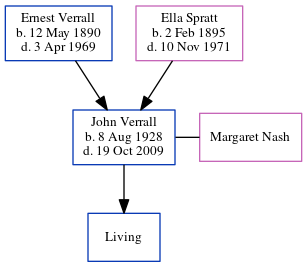

John Leslie Verrall 1928 - 2009
[ Home ] | [ Calendar ] | [ Surnames Index ] | [ Errors ] | [ Family History ]The 4th of 5 children of Ernest Verrall (a window cleaner) and Ella Spratt (a charwork), John Verrall, the first cousin once-removed on the father's side of Nigel Horne, was born in Thanet, Kent, England on 8 Aug 19281,2,3 and. He married Margaret Nash (with whom he had 1 surviving child, ) in Thanet around Aug 19534 (Jul/Aug/Sep). In 2003, he was living at 33 Park Side, Westcliff-On-Sea, Essex, England5.
He died on 19 Oct 2009 in Westcliff-On-Sea2,3.
Parents
- Ernest Charles was born on 12 May 1890
- Ella was born on 2 Feb 1895
Citations
- England & Wales, Birth Index: 1916-2005 Online publication - Provo, UT, USA: The Generations Network, Inc., 2008.Original data - General Register Office. England and Wales Civil Registration Indexes. London, England: General Register Office. © Crown copyright. Published by permission of the Cont
- England and Wales, Death Index, 2007-2013 Ancestry.com Operations, Inc.
- United Kingdom Deaths 2007-2017 - Findmypast
- England & Wales, Marriage Index: 1916-2005 Online publication - Provo, UT, USA: The Generations Network, Inc., 2009.Original data - General Register Office. England and Wales Civil Registration Indexes. London, England: General Register Office. © Crown copyright. Published by permission of the Cont
- UK, Electoral Registers, 2003-2010
Notes
Named after his grandfather John Spratt, whose funeral may well have been on the same day John Verrall was born.
Media
England & Wales births 1837-2006 Transcription - BMD-B-1928-3-AZ-001290-061
England & Wales marriages 1837-2008 Transcription - BMD-M-1953-3-AZ-001693-112
United Kingdom Deaths 2007-2017 - BMD/D/MILLEN/002016166
Family Tree
Map
Generated by ged2site. Last updated on Jul 3, 2024
Known Issues
Listed in the residence for 2003, but spouse Margaret Nash is not
1939 UK register information missing